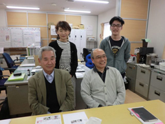

3.11を忘れない・・
みやぎ生協から被災地・宮城のいまをお伝えします
第33回 2016年5月5日
～ひとの復興～
「心配なのは次のステップが見えない人たち」
復興公営住宅の整備にともない仮設住宅の入居者は目に見えて減少しています。石巻市は入居率が3割を下回りそうな仮設団地から集約化の方針を立てました。しかし4月現在具体的な計画を住民に示すまでには至っていません。
「石巻市には133ヵ所の仮設団地がある。そこを集約するのは至難の技だが、住民が今後の身の振り方を考えられるよう、早く決めてほしい」。そう話すのは、仮設住宅と復興公営住宅のコミュニティづくりに取り組む一般社団法人石巻じちれん会長の増田敬さんです。
現在、市内の仮設団地入居世帯は3,951（※）。集約化を進めるため市は、様々な事情で復興公営住宅の申込みができない人や経済的に厳しく自立が難しい人たちを支援する仕組みをつくろうとしています。
石巻じちれん事務局長の内海徹さんは「復興公営住宅などの完成を待つ人たちは明日が見えているからまだいい。心配なのは経済的な理由で次のステップが見えない人たち」と言います。活動のなかで生活困窮者や健康に問題を抱えた住民に出会うことがあり、そうした場合は見守りを続けながら専門機関につなぐようにしています。
最初は生活再建めざして一生懸命に動いていても5年経つうちに意欲が薄れてしまい、仮設住宅を出ようという気力が無くなったー。そんなケースも見かけるそうです。「狭い仮設住宅では趣味を楽しむ余裕もなく、ただ寝るだけ。本当の生活じゃない」と増田さんは顔を曇らせます。
|  |
| 石巻じちれんの事務局の皆さん。前列左から会長の増田敬さん、事務局長の内海徹さん。後列左からスタッフの阿部由記さん、熊谷基さん。 |
入居者の減少で自治会役員の担い手がいなくなると、住民同士の交流機会も減ります。石巻じちれんは、集会所の鍵を管理する住民を窓口に常にコンタクトを取れるようにしておき、石巻じちれん開催のカラオケ温泉ツアーや観桜会などの交流イベントに参加を呼びかけて家のなかに閉じこもっている人を一人でも多く外に誘い出すようにしています。
生活再建の方法がまだ見えない住民は集約による転居、その後の住まい、経済的問題と不安が消えることはありません。石巻じちれんのように親身に寄り添って支える存在が、被災地ではますます重要性を増しています。
※ 「応急仮設住宅一覧」（平成28年4月1日現在、石巻市）
 前の記事 第32回「～ひとの復興（2）～いまの暮らしと帰郷の思い」（2016年4月5日）
前の記事 第32回「～ひとの復興（2）～いまの暮らしと帰郷の思い」（2016年4月5日）